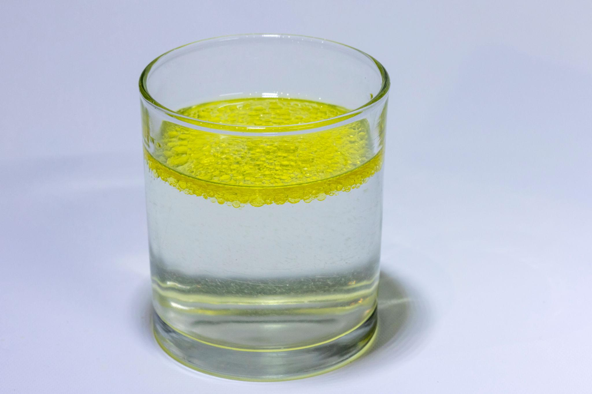
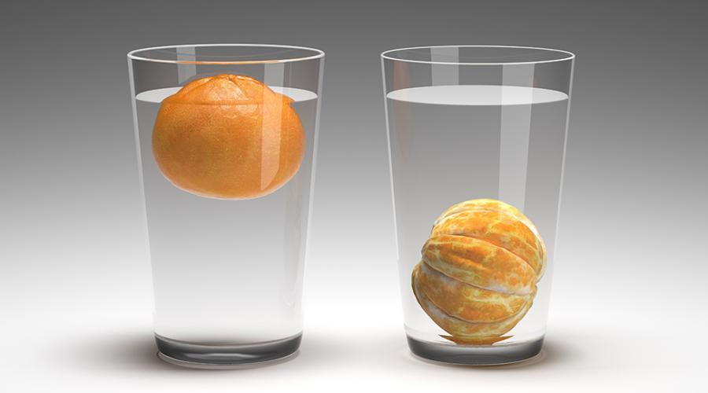
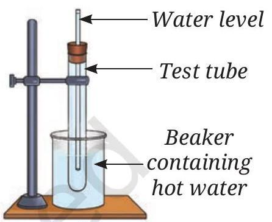

Class 8 Science
Class-8 Chapter 9: Amazing World of Solute, Solvent and Solution
Textbook Exercise - Questions and Answers
Q1. State whether the statements given below are True [T] or False [F]. Correct the false statements.
(i) Oxygen gas is more soluble in hot water rather than in cold water.
Answer: False (F)
Correction: Oxygen gas is more soluble in cold water than in hot water.
(ii) A mixture of sand and water is a solution.
Answer: False (F)
Correction: A mixture of sand and water is a non-uniform mixture, not a solution.
(iii) The amount of space occupied by any object is called its mass.
Answer: False (F)
Correction: The amount of space occupied by an object is called its volume.
(iv) An unsaturated solution has more solute dissolved than a saturated solution.
Answer: False (F)
Correction: A saturated solution contains the maximum amount of dissolved solute at a particular temperature.
(v) The presence of different gases in the atmosphere is also a uniform mixture.
Answer: True (T)
Explanation: Different gases are uniformly mixed in the atmosphere. Therefore, air is a uniform mixture.
Q2. Fill in the blanks.
(i) The volume of a solid can be measured by the method of displacement, where the solid is ________ in water and the ________ in water level is measured.
Answer: Immersed; increase.
(ii) The maximum amount of ________ dissolved in ________ at a particular temperature is called solubility at that temperature.
Answer: Solute; solvent.
(iii) Generally, the density ________ with increase in temperature.
Answer: Decreases.
(iv) The solution in which glucose has completely dissolved in water, and no more glucose can dissolve at a given temperature, is called a ________ solution of glucose.
Answer: Saturated.
Q3. You pour oil into a glass containing some water. The oil floats on top. What does this tell you?
(i) Oil is denser than water.
(ii) Water is denser than oil.
(iii) Oil and water have the same density.
(iv) Oil dissolves in water.
Answer: Option (ii) - Water is denser than oil.
Explanation:
Oil floats on water because oil is less dense than water. Therefore, water is denser than oil.

Q4. A stone sculpture weighs 225 g and has a volume of 90 cm³. Calculate its density and predict whether it will float or sink in water.
Answer:
Given:
- Mass = 225 g
- Volume = 90 cm³
Formula:
Density = Mass / Volume
Putting the values:
Density = 225 / 90
Density = 2.5 g/cm³
Conclusion:
The density of water is approximately 1 g/cm³.
Since the density of the stone (2.5 g/cm³) is greater than the density of water, the stone will sink in water.
Q5. Which one of the following is the most appropriate statement, and why are the other statements not appropriate?
(i) A saturated solution can still dissolve more solute at a given temperature.
(ii) An unsaturated solution has dissolved the maximum amount of solute possible at a given temperature.
(iii) No more solute can be dissolved into the saturated solution at that temperature.
(iv) A saturated solution forms only at high temperatures.
Answer: Option (iii) is correct.
Explanation:
- Option (i) is incorrect because a saturated solution cannot dissolve more solute at the same temperature.
- Option (ii) is incorrect because an unsaturated solution can dissolve more solute.
- Option (iii) is correct because a saturated solution already contains the maximum amount of dissolved solute at a particular temperature.
- Option (iv) is incorrect because a saturated solution can form at different temperatures.
Q6. You have a bottle with a volume of 2 litres. You pour 500 mL of water into it. How much more water can the bottle hold?
Answer:
Given:
- Total volume = 2 litres = 2000 mL
- Water already poured = 500 mL
Formula:
Remaining Capacity = Total Volume - Water Already Poured
= 2000 - 500
Remaining Capacity = 1500 mL
Answer: The bottle can hold 1500 mL (1.5 litres) more water.
Q7. An object has a mass of 400 g and a volume of 40 cm³. What is its density?
Answer:
Given:
- Mass = 400 g
- Volume = 40 cm³
Formula:
Density = Mass / Volume
= 400 / 40
Density = 10 g/cm³
Answer: The density of the object is 10 g/cm³.
Q8. Analyse Fig. 9.25a and 9.25b. Why does the unpeeled orange float, while the peeled orange sinks? Explain.

Answer:
- An unpeeled orange floats because its peel contains tiny air pockets.
- These air pockets reduce the average density of the orange.
- Therefore, its average density becomes less than the density of water.
- When the peel is removed, these air pockets are lost.
- The peeled orange becomes denser than water and sinks.
Conclusion: The peel helps the orange to float in water.
Q9. Object A has a mass of 200 g and a volume of 40 cm³. Object B has a mass of 240 g and a volume of 60 cm³. Which object is denser?
Answer:
For Object A:
- Mass = 200 g
- Volume = 40 cm³
Density = Mass / Volume
Density of A = 200 / 40
Density of A = 5 g/cm³
For Object B:
- Mass = 240 g
- Volume = 60 cm³
Density = Mass / Volume
Density of B = 240 / 60
Density of B = 4 g/cm³
Conclusion:
Object A is denser because its density (5 g/cm³) is greater than the density of Object B (4 g/cm³).
Q10. Reema has a piece of modelling clay that weighs 120 g. She first moulds it into a compact cube that has a volume of 60 cm³. Later, she flattens it into a thin sheet. Predict what will happen to its density.
Answer:
Given:
- Mass = 120 g
- Volume = 60 cm³
Formula:
Density = Mass / Volume
= 120 / 60
Density = 2 g/cm³
When Reema flattens the clay into a thin sheet:
- Its shape changes.
- Its mass remains the same.
- Its volume remains the same.
Therefore, its density does not change.
Answer: The density will remain 2 g/cm³.
Q11. A block of iron has a mass of 600 g and a density of 7.9 g/cm³. What is its volume?
Answer:
Given:
- Mass = 600 g
- Density = 7.9 g/cm³
Formula:
Density = Mass / Volume
Therefore,
Volume = Mass / Density
Putting the values:
Volume = 600 / 7.9
Volume = 75.95 cm³ (approximately)
Answer: The volume of the iron block is approximately 75.95 cm³.
Q12. You are provided with an experimental setup as shown in Fig. 9.26a and 9.26b. On keeping the test tube (Fig. 9.26b) in a beaker containing hot water (~70°C), the water level in the glass tube rises. How does it affect the density?

Answer:
When the test tube is placed in hot water:
- The water inside the test tube gets heated.
- Water expands when its temperature increases.
- Its volume increases.
- Its mass remains the same.
- Since density is mass divided by volume, its density decreases.
Conclusion:
When water is heated, its volume increases and its density generally decreases. Therefore, the water level rises in the glass tube.
Quick Revision - Important Formulas
| Quantity | Formula |
|---|---|
| Density | Mass / Volume |
| Mass | Density × Volume |
| Volume | Mass / Density |
| Remaining Capacity | Total Volume - Used Volume |
Important Points to Remember
- Density of water is approximately 1 g/cm³.
- Objects with density less than water generally float.
- Objects with density greater than water generally sink.
- Heating generally decreases the density of substances.
- A saturated solution cannot dissolve more solute at the same temperature.
MCQ Quiz
अध्याय के वस्तुनिष्ठ प्रश्नों का अभ्यास करें।
MCQ Quiz शुरू करेंPDF Notes
इस अध्याय के नोट्स PDF में पढ़ें या डाउनलोड करें।
📄 View PDF ⬇️ Download PDF